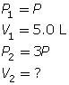
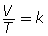
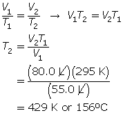
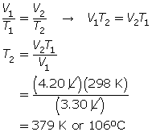
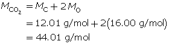
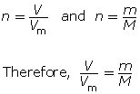

In this unit you will focus on the nature of matter through an investigation of the properties and behaviour of gases. This unit builds on concepts of matter, energy, and chemical change discussed in Grade 9 Science and in Science 10.
You will also be using graphing, measuring, and algebraic techniques learned in previous math and science courses. This unit will prepare you for Unit D in this course and for your study of chemical equilibrium in Chemistry 30.
The major concepts developed in this unit include
This module will explore how these relationships describe the behaviour of gases and how gases are used currently in various technologies.
This unit and module together will support this overarching question:
In this module, models of the gaseous state of matter will be used to explain molecular behaviour. The major concepts developed in this unit are properties of gases and Boyle’s law; Kelvin temperature, Charles’ law, and the combined gas law; law of combining volumes and Avogadro’s theory; and molar volume and the ideal gas law.
The essential questions you will investigate in this module are
You will begin your study of gases by learning how to apply Boyle’s law—a mathematical relationship between the pressure and volume of a gas. You will also learn about pressure measurement and how to convert from one unit to another.
While Boyle’s law establishes the relationship between the pressure and volume of a gas at a constant temperature, it may not be used if the temperature is changing. In this lesson you will learn that Charles’ law and the combined gas law may be used if the temperature of a gas changes. You will also learn about the Kelvin temperature scale and how to convert from degrees Celsius (ºC) to kelvin (K).
The kinetic molecular theory has important implications for gas laws. In this lesson you will examine Gay-Lussac’s law of combining volumes (not to be confused with the combined gas law) and Avogadro’s theory.
In the final lesson of this module you will learn about the ideal gas law. This law establishes the relationship between the molar amount of a gas and other gas properties, such as pressure, volume, and temperature.
The assessment in this module consists of four (4) assignments, one for each lesson.
Module 3 Lesson 2 Assignment
© 2008 Jupiterimages Corporation
When you breathe, you do so unconsciously. Even when exercising, your body automatically increases the rate at which your lungs expand and the rate at which oxygen and carbon dioxide are exchanged by your body. The mechanics of breathing are often overlooked, but without the action of muscles that increase the size of your rib cage, air could not be drawn into your lungs.
The mechanics of breathing illustrates one of the crucial relationships in matter. Assisting someone to breathe, either by performing cardiopulmonary resuscitation (CPR) or by supplying them with a compressed gas, uses the same principle as breathing normally.
You will complete the Module 3 Assignment 1 in this lesson.
Remember that the questions that are not marked by the teacher provide you with the practice and feedback that you need to successfully complete this course. You should respond to all the questions and place those answers in your course folder.
Gases exert a pressure, a force on surfaces they come in contact with. Atmospheric pressure is a measurement you often hear about since changes in pressure often bring a change to local weather.
To learn more about pressure and how the pressure exerted by a gas is measured, read “Pressure” on pages 148 and 149 in your textbook.
You may wish to prepare a list of the most important information in this reading. Compare your list with these summary notes on pressure.
Unit Name |
Unit Symbol |
Definition/Equivalencies to Another Unit |
pascal (SI unit) |
Pa |
1 Pa = 1 N/m2 |
atmosphere |
atm |
1 atm = 101.325 kPa |
millimetres of mercury |
mm Hg |
760 mm Hg = 1 atm |
torricelli |
torr |
1 torr = 1 mm Hg |
bar |
bar |
1bar = 100 kPa |
You can see that a variety of units can be used to communicate a measurement of the pressure of a gas. In some situations it is necessary to convert between units. Equivalencies between the units are shown in the summary notes and in “Table 2: SI and Non-SI Units of Pressure” on page 149 of your textbook.
Carefully work through “COMMUNICATION example 1” on page 150 and the following examples.
Conversions between units may involve one set, or multiple equivalencies. You will need to use the equivalencies in your summary table.
A convenient method used in converting between units is to arrange the equivalencies into a fraction where the numerator and denominator are equal, but they are values in two different units. The numerator of the fraction should have the units that you want to convert to, and the denominator of your fraction should have the units you want to convert from. This arrangement will allow the unwanted units to cancel.
Example 1
Equivalencies can be written between units shown on the table that are not already listed. For example, what is the equivalency between kPa and mm Hg? After you have command of these equivalencies, you can complete other unit conversions.
Example 2
For this activity you will have to go on the internet. If it is not possible to get on the internet, skip this activity and proceed to the "Read" activity.
When you click on the video link, you will have to enter LA48 as the username and 7984 as the password to login. To watch a video to see an experimental illustration of the effect of pressure on the volume of a gas, click on the link in Module 3 Lesson 1 Page 3 on your DVD. You can toggle between the inquiry and explanatory audio tracks as well.
After you have watched the video, summarize what you observed. Where possible, use data from the video to support the points you make. Put your summary in your course folder.
In the video you observed the effect of exerting a great pressure on the volume of a contained gas. But was there a pattern in changes you observed?
Read “Boyle’s Law” on page 151 in your textbook to learn more about this relationship. Carefully work through COMMUNICATION example 2 on page 151.
SC 1.
Complete the following table by converting each measurement into the other four units.
|
kPa |
atm |
mm Hg |
torr |
bar |
|
|
4.05 |
|
|
|
|
50.0 |
|
|
|
|
|
|
|
|
|
1.33 |
|
|
|
|
770 |
|
|
|
|
616 |
|
|
SC 2. In Vancouver, where the air pressure is 100 kPa, a child is given a 2.5-L balloon. The family then drives to a higher elevation above sea level, where the air pressure is only 85 kPa. If the temperature is the same in both places, what is the volume of the balloon in the higher location?
SC 3. Complete “Practice” questions 6, 8, and 9 on page 152 in your textbook.
SC 4. A sample of gas is initially at a pressure of 53 kPa and has a volume of 1.8 L. Determine the new pressure if the volume of the gas decreases to 1.2 L.
SC 5. A sample of gas is initially at a pressure of 1.3 atm and has a volume of 2.3 mL. Determine the new volume if the pressure of the gas decreases to 1.1 atm.
SC 6. A sample of gas has a volume of 5.0 L. Determine the new volume of the gas if the pressure is tripled.
SC 1.
kPa |
atm |
mm Hg |
torr |
bar |
410 |
4.05 |
3.08 x 103 |
3.08 x 103 |
4.10 |
50.0 |
0.493 |
375 |
375 |
0.500 |
133 |
1.31 |
998 |
998 |
1.33 |
103 |
1.01 |
770 |
770 |
1.03 |
82.1 |
0.811 |
616 |
616 |
0.821 |
SC 2. Use Boyle’s law.
SC 3. Questions 6, 8 and 9 on page 152 of your textbook.

According to Boyle’s law, the final pressure of the air is 263 kPa.


SC 4. First, list all the variables.

Now, apply Boyle’s law.

SC 5. First, list all the variables.

Now, apply Boyle’s law.

SC 6. Because the pressure is being tripled, call the initial pressure P and the final pressure 3P (3 times the initial pressure).
First, list all the variables.

Now, apply Boyle’s law.

Step 1: Fill a glass with water, draw water into an eyedropper, and place the eyedropper into the glass of water. If it sinks, remove some of the water from the eyedropper. Continue to adjust the water in the eyedropper so that it just barely floats.
Step 2: Fill a clear plastic 1-L or 2-L pop container three-quarters full with water. Carefully place the eyedropper into the pop container without losing any of the water in the eyedropper.
Step 3: Tightly cap the pop container. (The eyedropper should be floating.)
Step 4: Squeeze the sides of the pop container. You should be able to make the eyedropper sink. Releasing the pressure on the sides of the pop container should make the eyedropper float. If this doesn't happen, you will have to adjust the amount of water in the eyedropper.
Can you explain why the diver sinks when the pop bottle is compressed? Write an explanation, making explicit reference to Boyle's law and any observations of changes in pressure and volume you observed.
Share your answers with your classmates or some other people and revise your explanation based on their comments. Save your final version to your course folder.
You will complete the following lab as part of your Lesson 1 Assignment. When you are doing the lab, record the volume and pressure readings on paper. When the lab is complete you will enter the data in the assignment and answer some questions about the lab.
The following lab activity will enable you to complete a virtual experiment to investigate Boyle’s law. Click on Lab 2: Boyle's Law. Ensure you read through the Background, Procedure, and Assignment before beginning the lab.
Complete the Module 3 Lesson 1 Assignment according to the pathway you choose.
To work on your assignment as an online quiz, click on Module 3 Lesson 1 Assignment in the "Quizzes". Complete questions 1 to 12 in the assignment.
To work on your assignment as an MSWord document, complete the questions in Part 1 in the assignment.
Complete the remaining questions in the assignment.
On a cold winter day in Alberta, temperatures may be around –30 °C. On a hot summer day in Alberta, the temperature may be around 30 °C. Is it easier to breathe in cold weather or hot weather? You probably find that it is more difficult to breathe when it is cold outside. This isn’t purely temperature dependent, however. Other factors, such as humidity, also affect breathing.
Step 1: Inflate a balloon.
Step 2: Measure the size of the balloon.
Step 3: Place the balloon into a freezer (typically around –18 °C), and leave it there for ten minutes.
Step 4: Remove the balloon from the freezer and quickly determine its size.
Does the balloon get bigger or smaller when it is cooled?
In Lesson 1 you learned that the pressure of a gas is the result of the collisions of the gas molecules against the surfaces of its container. Do you recall how temperature affects the motion of particles? How would this explain the change in the size of the balloon upon cooling and heating?
The investigation you completed identifies an important relationship between temperature and volume of a gas. This relationship was first described by Jacques Charles—a French chemist, physicist, and aeronaut. In 1783, Charles made the first hot-air balloon using hydrogen gas and ascended to a height of nearly 3 km. Charles’ work with hot-air balloons set the stage for his discovery of the relationship between temperature and volume.
In this lesson you will investigate this relationship, as well as consider the relationship of pressure, volume, and temperature for a fixed amount of gas.
You will complete the Module 3 Assignment 2 in this lesson.
Remember that the questions that are not marked by the teacher provide you with the practice and feedback that you need to successfully complete this course. You should respond to all the questions and place those answers in your course folder.
You may have observed a container rupture as a result of the expansion of the trapped gas inside. This event may occur if the gas is heated, for instance by the sun on a hot day or by exposure to another heat source.
The kinetic molecular theory states that particles increase their rate of motion with increased temperature. How does this theory relate to the pressure and volume of a confined gas?
Read “The Relationship Between Temperature and Volume” and "Absolute Temperature Scale" on pages 152 to 153 and “Temperature Measurement Technologies” on pages 155 and 156 in your textbook. You will learn more about the absolute temperature scale and how it is related to the motion of particles. You will also find out why precise measurement is necessary for scientific investigation of gases.
SC 1. Complete the following table.
Temperature (°C) |
Temperature (K) |
–38 |
|
|
358 |
104 |
|
|
413 |
173 |
|
SC 1.
Temperature (°C) |
Temperature (K) |
–38 |
235 |
85 |
358 |
104 |
377 |
140 |
413 |
173 |
446 |
In the Try This activity you completed earlier, you noticed that when the balloon cooled, it was reduced in size, or the volume the gas inside occupied, was less.
What would happen if you cooled or heated the gas inside the balloon and continued to measure its volume? Would you be able to observe a pattern?
Read “Charles’ Law” on pages 154 and 155 in your textbook. Carefully work through “COMMUNICATION example 3” and the “Learning Tip” in the margin on page 155.
Important: Remember that temperatures used in calculations must be in Kelvin, not degrees Celsius.
SC 2. A balloon containing 1.25 L of helium is heated and increases in temperature from 21°C to 87°C. If kept at constant pressure, what is the final volume of the helium in the balloon?
SC 3. A balloon has a volume of 55.0 L at 22.0°C. To what temperature does the balloon need to be raised to have a volume of 80.0 L at the same pressure?
SC 4. A gas has a volume of 3.30 L and a temperature of 25.0°C. The temperature of the gas is increased, and the new volume is 4.20 L. If the pressure is held constant, what is the new temperature of the gas?
SC 5. A gas is in a perfectly airtight metal cylinder with a movable top to allow for the expansion/compression of the gas. Charles’ law states that the ratio of volume to temperature for a gas is a constant, according to this formula:

Design an experiment to determine the value of k for the gas.
SC 2. First, convert the temperatures to K.
21°C + 273 = 294 K
87°C + 273 = 360 K
Now, use Charles’ law.

SC 3. First, convert the temperature to K.
22°C + 273 = 295 K
Now, use Charles’ law.

SC 4. First, list all the variables.


SC 5. A possible experiment is given.
Heat up the gas from 200 K to 300 K. Using increments of 10 K for each trial, measure the resulting volume of the gas. Plot the measurements on a graph with volume on the y-axis and temperature on the x-axis. Calculate the slope of the straight-line graph. This yields the value for k. (Recall that the equation V = kT is a straight line of the form y = mx.)
For additional practice, try the following questions in your textbook:
You can find the answers to these questions on page 783 in Appendix A of your textbook.
You will complete the following lab as part of your Lesson 2 Assignment. When you are doing the lab, record the volume and temperature readings on paper. When the lab is complete you will enter the data in the assignment and answer some questions about the lab.
The following lab activity will enable you to complete a virtual investigation of Charles’ law. Be sure you read through the Background, Procedure, and Assignment before beginning the lab. Click on Module 3 Lesson 2 Page 3 on your DVD to get the virtual lab.
Complete questions 1 to 10 in the Module 3 Lesson 2 Assignment according to the pathway you choose.
The combined gas law describes a relationship among pressure, volume, and temperature consistent with Boyle’s law and Charles’ law. Read “The Combined Gas Law” on page 156 to 158 in your textbook. Carefully work through “SAMPLE problem 4.1” and “COMMUNICATION example 4” on pages 157 and 158.
SC 6. A gas has a volume of 32 L, a temperature of 22°C, and a pressure of 92 kPa. If the temperature is decreased to 19°C and the pressure is increased to 98 kPa, what is the new volume of the gas?
SC 7. The combined gas law is very useful, since it is possible to obtain both Boyle’s law and Charles’ law from this one formula.
SC 6. First, list all the variables.


SC 7.


Throughout this module you will be asked to consider technologies that apply the use of one or more of the gas laws. For your combined unit and module assessment, you will prepare a response on a technology that applies one or more of the gas laws. To prepare your response, consider the following description of high-altitude balloons. Refer to the Unit Assessment document for more information.
The Breitling Orbiter 3 was the first hot-air balloon to complete a non-stop trip around the world. High-altitude ballooning involves a great deal of knowledge about gases and their behaviour. Use the Internet to research this topic by combining the search terms breitling, balloon, and design to learn more about the design of this balloon. Use your knowledge of the gas laws to explain how these design considerations are consistent with the relationships described in the gas laws you have studied.
Save a copy of your explanation in your course folder. You may wish to use this information when completing the unit assessment.
Complete the rest of the questions in Assignment 2.
In this lesson you investigated the following questions:
In this lesson you explored the Kelvin temperature scale and the basis of this scale—absolute zero. You discovered that when using Charles’ law and the combined gas law, Kelvin temperatures are needed. As such, you converted between degrees Celsius and kelvin.
You then discovered Charles’ law, which states as the temperature of a gas increases, the volume increases proportionally, provided that the pressure and chemical amount of gas remain constant.
You performed calculations and completed a virtual lab based on Charles’ law.
Finally, you combined Charles’ law with Boyle’s law to form the combined gas law and performed various calculations based on the resulting formula.
© Lyle J. Anderson. Used with permission
High-altitude ballooning creates many unique situations that must be considered. One aspect is the quantity of available oxygen. Oxygen is necessary for the crew to survive, and at high altitudes in the atmosphere, oxygen is less plentiful. You may recall that hot air within the balloon is necessary for lift. The air inside the balloon is heated by a combustion reaction. How is this possible in the upper atmosphere with limited oxygen?
You may notice the large compressed gas cylinders along the side of the Breitling Orbiter 3, the first hot-air balloon to circle Earth without stopping. The gases in the Breitling orbiter balloon were heated using a combustion reaction involving propane and oxygen. When planning the flight, the balloonists needed to know how many canisters of each gas, propane and oxygen, to carry. How would knowledge of gas laws assist their efforts?
You will complete the Module 3 Assignment 3 at the end of this lesson.
Remember that the questions that are not marked by the teacher provide you with the practice and feedback that you need to successfully complete this course. You should respond to all the questions and place those answers in your course folder.
In Lessons 1 and 2 of this module you referred to the kinetic molecular theory of matter to help you visualize the behaviour of gas particles explained by the gas laws you have studied. This theory can be used to develop a model that explains the physical behaviour of gases. In the gas phase, all pure substances show remarkably similar physical behaviour.
In your experiments conducted thus far, the relationships among pressure, volume, and temperature by Boyle’s law and Charles’ law were verified with all the gases tested. What is true for nitrogen is true for oxygen, hydrogen, and any other gas. The behaviour of gases is independent of the type of gas present. The fact that different gases resemble each other so closely in their physical behaviour has some interesting results.
Read pages 163 and 164 in your textbook to review a summary of the application of concepts of the kinetic molecular theory to what you have learned thus far in this module.
SC 1. Complete “Practice” question 1 (a) through (e) on page 164 of your textbook.
SC 1.
The kinetic molecular theory, Boyle’s law, and Charles’ law consider individual or mixtures of unreactive gases. What happens when gaseous substances mix and react? Is there evidence that shows how gaseous substances react with one another?
The law of combining volumes was observed by Joseph Gay-Lussac in 1809. This law states that when temperature and pressure are kept constant, the volumes of gaseous reactants and products in chemical reactions are always in simple ratios of whole numbers. An example is the formation of water, which always requires a ratio of 2 (hydrogen) : 1 (oxygen).
Word Equation |
hydrogen |
+ |
oxygen |
→ |
water |
Volume |
2.0 L |
|
1.0 L |
|
2.0 L |
Volumes of gases were measured because that was empirically possible. But how does a measure of the volumes of gases relate to the number of particles present? Is there a relationship between volume and number of particles in a system?
In 1811, Amedeo Avogadro explained Gay-Lussac’s observations. Avogadro noticed the relationship between the ratio of gas volume and the coefficient ratio of a balanced equation.
The coefficient ratio of hydrogen gas to oxygen gas is also 2:1—the same as the gas volume ratio. Finally, there is Avogadro's Theory, which states that equal volumes of gases at the same temperature and pressure contain equal numbers of molecules. An example is the formation of water.
Word Equation |
hydrogen |
+ |
oxygen |
→ |
water |
Balanced Equation |
2 H2(g) |
+ |
O2(g) |
→ |
2 H2O(g) |
Ratio |
2 |
|
1 |
|
2 |
Volume |
2.0 L |
|
1.0 L |
|
2.0 L |

Since equal volumes contain equal numbers of gas molecules, a chemical equation in which all the substances are in the gas phase can be read two ways: as moles of each substance involved, or as litres of each substance involved.
It is important to note that the ratio describes the comparative quantity of each substance in the balanced equation, not the exact quantity. In other words, it could have been 15 L of hydrogen, 7.5 L of oxygen, and 15 L of water. You must, however, always have twice as much hydrogen as oxygen during the formation of water.
Example
Complete the following table.
Word Equation |
hydrogen |
+ |
oxygen |
→ |
water |
Balanced Equation |
2 H2(g) |
+ |
O2(g) |
→ |
2 H2O(g) |
Ratio |
2 |
|
1 |
|
2 |
Volume |
|
|
225 mL |
|
|
According to the ratio, there is twice as much hydrogen as oxygen. Therefore, the volume of hydrogen must be 2 × 225 mL = 450 mL. Similarly, there is twice as much water as oxygen, which equates to 2 × 225 mL = 450 mL.
For additional clarification of this important law, read “Explaining the Law of Combining Volumes” on pages 164 to 166 in your textbook. Carefully work through “SAMPLE problem 4.2” and the “COMMUNICATION example” in this section.
SC 2. Complete the following table.
Word Equation |
hydrogen |
+ |
chlorine |
→ |
hydrogen chloride |
Balanced Equation |
H2(g) |
+ |
|
→ |
2 HCl(g) |
Ratio |
1 |
|
|
|
2 |
Volume |
|
|
1.1 L |
|
|
SC 3.
The Breitling Orbiter 3 uses the combustion of propane and oxygen to heat gases in the two chambers of the high-altitude balloon. Complete the following table to investigate the proportion by which propane and oxygen are used in a combustion reaction.
Word Equation |
propane |
+ |
oxygen |
→ |
carbon dioxide |
+ |
water vapour |
Balanced Equation |
|
+ |
5 O2(g) |
→ |
3 CO2(g) |
+ |
4 H2O(g) |
Ratio |
|
|
5 |
|
3 |
|
4 |
Volume |
|
|
|
|
|
|
80 mL |
SC 4. Use the law of combining volumes to find the volume of oxygen required for the complete combustion of 83.0 mL of propane. Assume the pressure and temperature are held constant.
SC 5. Butane gas is combusted to produce carbon dioxide and water vapour. If 2.4 mol of butane reacts, how many moles of water vapour will be produced?
SC 6. Complete question 5(a) on page 168 of your textbook.
SC 2.
Word Equation |
hydrogen |
+ |
chlorine |
→ |
hydrogen chloride |
Balanced Equation |
H2(g) |
+ |
Cl2(g) |
→ |
2 HCl(g) |
Ratio |
1 |
|
1 |
|
2 |
Volume |
1.1 L |
|
1.1 L |
|
2.2 L |
SC 3.
Word Equation |
propane |
+ |
oxygen |
→ |
carbon dioxide |
+ |
water vapour |
Balanced Equation |
C3H8(g) |
+ |
5 O2(g) |
→ |
3 CO2(g) |
+ |
4 H2O(g) |
Ratio |
1 |
|
5 |
|
3 |
|
4 |
Volume |
20 mL |
|
100 mL |
|
60 mL |
|
80 mL |
SC 4. First, write the balanced chemical formula.
C3H8(g) + 5 O2(g) → 3 CO2(g) + 4 H2O(g)
The ratio of oxygen to propane is: 5 molOxygen : 1 mol propane or
5 mLOxygen : 1 mL propane if the gases are at the same temperature and pressure.
Therefore, 83 mLpropane ( 5 mLoxygen / 1 mLpropane) = 415 mLoxygen
SC 5. First, write the balanced chemical formula.
2 C4H10(g) + 13 O2(g) → 8 CO2(g) + 10 H2O(g)
The ratio of water vapour to butane is: 10 molwater vapour : 2 mol butane
Therefore, 2.4 moLbutane ( 10 moLwater vapour / 2 moLbutane) = 12moLwater vapour
SC 6. Question 5 (a) on page 168 of your textbook.
4 NH3(g) + 5 O2(g) → 4 NO(g) + 6 H2O(g)
V=100 L V = ? V= ? V= ?
Voxygen = 100Lammonia (5 Loxygen / 4 Lammonia) = 125 Loxygen
Vnitrogen monoxide = 100Lammonia (4 Lnitrogen monoxide / 4 Lammonia) = 100 Lnitrogen monoxide
Vwater vapour = 100Lammonia (6 Lwater vapour / 4 Lammonia) = 150 Lwater vapour
Throughout this module you have considered technologies that apply the use of one or more of the gas laws.
Large oxygen and propane cylinders are situated along the side of the Breitling Orbiter 3. A combustion reaction involving these two gases is used to heat the gases within the balloon. When planning the flight, the balloonists needed to know how many canisters of each gas, propane and oxygen, to carry.
Knowledge of the gas laws is required to design the system to efficiently heat the gases in a high-altitude balloon. The correct amounts of oxygen and propane are required so that both would be totally consumed at the same time.
Complete the Module 3 Lesson 3 Assignment according to the pathway you choose.

© 2008 Jupiterimages Corporation
A flat tire can be a real problem when cycling. Not only does it take time to change the tire, but getting the inflation correct can be tricky. Riding on an underinflated tire decreases efficiency. It may also decrease your ability to steer around hazards in your path. Pinching the tire is one way to check the inflation of a tire, but more often a pressure gauge is used to get an accurate reading. Inflating a tire to the appropriate pressure involves adding air, but what quantity of gas is necessary for proper inflation?
In Lesson 3 you began to investigate the relationship between the chemical quantity of a gas (moles) and one of its measurable properties (volume). In Lessons 1 and 2 you investigated relationships between volume and pressure and between volume and temperature.
There is also the empirical relationship you may have already observed—adding more gas (increasing moles) will increase the pressure exerted by gas.
How can all of these relationships be combined to better explain and predict the relationship between quantity of gas and its measurable properties?
What is molar volume?
What is the difference between a real gas and an ideal gas?
What relationship exists between pressure, volume, temperature, and moles of gas?
You will complete the Module 3 Assignment 4 at the end of this lesson.
Remember that the questions that are not marked by the teacher provide you with the practice and feedback that you need to successfully complete this course. You should respond to all the questions and place those answers in your course folder.
Avogadro’s theory states that equal volumes of any gas, measured at constant temperature and pressure, contain equal numbers of molecules. But how many molecules are there?
From your previous learning in science you know that chemical quantities are expressed as moles. A mole is defined as 6.02 × 1023 atoms, molecules, or particles. Therefore when you indicate that a mole of propane combusts, you are also saying that 6.02 × 1023 molecules of propane combust. To make measuring a quantity of a gas easier, we often use volumes—so what volume does one mole of propane, or any other gas, occupy?
It should not surprise you that the molar volume for all gases is dependent upon the temperature and pressure of the gas. Therefore, there are two common temperature/pressure sets:
Set |
Conditions |
standard temperature and pressure (STP) |
0 °C and 101.325 kPa |
standard ambient temperature and pressure (SATP) |
25 °C and 100 kPa |
At these conditions a mole of any gas has the following volumes:
STP 22.4 L/mol.
This means that one mole of gas at STP constitutes about 11 two-litre pop bottles!
SATP 24.8 L/mol
If the conditions are changed to SATP, a higher temperature, and a slightly lower pressure, the volume occupied by the same number of particles of gas is 24.8 L/mol.

This means that one mole of gas at SATP constitutes over 12 two-litre pop bottles!
Volumes are used when dealing with gases because measuring the mass of a gas is just too hard! Knowing the molar volume allows you to calculate the number of moles of a gas or the volume of gas according to this formula:

Example 1
How many moles of oxygen are available for a combustion reaction in a volume of 5.6 L at STP?

What volume is occupied by 0.024 mol of carbon dioxide gas at SATP?
For clarification of molar volume of gases, read the information on pages 169 and 170 in your textbook. You will also find out about the calculations involved in converting a volume of gas at one of the standard conditions into moles of gas.
SC 1. Hydrogen gas can be used in weather balloons because of its low density. The volume occupied by 4.50 mol of hydrogen at SATP is
SC 2. Hydrogen gas can be used in weather balloons because of its low density. The volume occupied by 4.50 mol of hydrogen at STP is
SC 3. Nitrogen gas is an important gas in artificial breathing apparatus. The number of moles of nitrogen gas in 100 L of pure nitrogen at STP is
SC 4. Nitrogen gas is an important gas in artificial breathing apparatus. The number of moles of nitrogen gas in 100 L of pure nitrogen at SATP is
SC 1. C
SC 2. B
SC 3. A
SC 4. B
In some situations the mass of the gas is able to be measured or is communicated. From your study of gases in this unit, you will understand why a value for mass is often converted into a volume for that gas. What calculation is necessary for this conversion?
In previous science courses you learned how to calculate moles of a substance from mass. Molar mass is the value used to convert mass to moles. Follow the example below to review this conversion.
Example 2
Carbon dioxide is a greenhouse gas. Convert 1.5 kg of carbon dioxide into moles.
Step 1: Write the chemical formula for carbon dioxide.
CO2
Step 2: Determine the molar mass of carbon dioxide. The molar mass of each element is found on the periodic table.

Step 3: Determine the number of moles.


You can combine the two formulas for number of moles, n, to calculate the volume of gas that is available from a known mass of a substance. This is done as follows:

Example 3
What volume does 1.5 kg of carbon dioxide gas occupy at SATP?


SC 5. How many grams of oxygen gas are present in a 5.00-L container at STP?
SC 6. At SATP, what volume will 84.7 g of argon gas occupy?
SC 5.

SC 6

Real vs. Ideal Gases
In Lesson 1 you completed a lab investigating the relationship between pressure and volume of two gases. Did you observe any difference in the way the gases behaved? If you look back on your data and graphs, you will notice that the data collected for the two gases are almost identical.
This lab demonstrated that as long as temperature was constant, and the gases were compressed to similar volumes, they produced the same pressure. As you learned in this module, the pressure exerted by a gas is a direct result of its motion. When gases produce equal pressures when all other conditions are similar, it means that the degree of motion of the two gases is the same.
In Unit A you learned about intermolecular forces and how attractions between atoms and molecules in a system can influence boiling point. You might ask whether the difference in intermolecular forces between these two gases tested would alter their behaviour and cause a difference in the observed pressure of each gas.
Clearly the data from your experiment shows this is not the case, and that the gases are behaving independent of these kinds of forces under the conditions of the experiment. When gases do not appear to be influenced by forces between them, along with other characteristics, they exhibit ideal behaviour.
Read “The Ideal Gas Law” on pages 172 through 175 in your textbook. You will find out what other conditions make the behaviour of a gas “ideal.” In this section you will also learn about the development of the ideal gas law, a relationship among all the variables you have studied in this unit: pressure, volume, temperature, and moles of gas.
Carefully work through “SAMPLE problem 4.4,” the “COMMUNICATION example” on page 174, and the following examples.
Example 4
How many grams of oxygen gas are there in a 60.0-L tank at 25.0 °C when the pressure in the tank is 12.2 MPa (MPa = megapascals)?
First, determine the number of moles using the ideal gas law.


Now, determine the number of grams of oxygen.


The mass of O2(g) is 9.45 × 103 g or 9.45 kg.
Example 5
Experiments show that a reaction will produce 12.7 g of CO2(g). What volume of CO2(g) should be expected at a new temperature of 40.0 °C and 120.0 kPa?
First, find the number of moles of carbon dioxide gas.


Now, determine the volume using the ideal gas law.
A volume of 6.26 L of CO2(g) should be expected.
As you can see by these examples, using the ideal gas law to predict the pressure, volume, or mass of gas can be very useful. One of the most practical reasons for using this relationship is to ensure the safety of people working with compressed gases and to ensure that the capacity of containers is not exceeded.
SC 7. What mass of neon gas should be introduced into an evacuated 0.88-L tube to produce a pressure of 90 kPa at 30 °C?
SC 8. When an air bag is activated in a collision, sodium azide rapidly decomposes to produce nitrogen gas. Chemical engineers carefully choose the quantity of sodium azide to produce the required chemical quantity of nitrogen gas. Use the ideal gas law to predict the chemical quantity of nitrogen gas required to fill a 60-L air bag at a pressure of 233 kPa and a temperature of 25 °C.
SC 9. At what temperature does 10.5 g of ammonia gas exert a pressure of 85.0 kPa in a 30.0-L container?
SC 10. Use the ideal gas law to determine three ways to reduce the volume of gas in the shock absorber (cylinder and piston) of an automobile.
SC 11. A 1.49-g sample of a pure gas occupies a volume of 981 mL at 42.0 °C and 117 kPa.
SC 7. First, find the number of moles using the ideal gas law.
Finally, determine the mass of the neon.

There should be 0.63 g of neon introduced to the tube.
SC 8.

To fill the air bag, 5.6 mol of nitrogen gas is needed.
SC 9. First, determine the number of moles of ammonia.

Now, calculate the temperature using the ideal gas law.

SC 10. The volume of a gas in an air (pneumatic) shock absorber can be reduced by decreasing the chemical amount of gas, by lowering the temperature, or by raising the pressure.
SC 11.


Since the formula is XH3, the molar mass of the three hydrogen atoms can be subtracted from the molar mass of the compound.
34.0 g/mol − 3.03 g/mol = 31.0 g/mol
You will use the following lab to complete the first part of your Lesson 4 Assignment.
In chemistry, solving mathematical and scientific problems is often attempted in a laboratory. By using appropriate glassware, chemicals, equipment, and technology, you can complete experiments, record data, perform calculations based on the data, and draw conclusions.
Click on Module 3 Lesson 4 on the DVD, then click the lab activity and select Lab 4: Molar Volume of an Ideal Gas from the list that appears. The lab activity will enable you to complete a virtual experiment to verify the molar volume of an ideal gas. At STP, the molar volume of a gas is 22.4 L/mol; and at SATP, the molar volume of a gas is 24.8 L/mol. This lab offers you an opportunity to test the molar volume of a gas with a different set of conditions, formulate a hypothesis, and test the results in the virtual lab.
Read through the Background, Procedure, and Assignment before beginning the lab.
Record your data in the following table. You will be asked to enter the data as part of your assignment for this lesson.
Mass of zinc used (g) |
|
Volume of 6 mol/L HCL (mL) |
|
Initial pressure inside flask |
|
Initial temperature inside flask |
|
Final pressure in the gas piston at the conclusion of the experiment |
|
Volume of gas collected in the piston |
|
Complete the Module 3 Lesson 4 Assignment according to the pathway you choose.
To complete your assignment as an online quiz, click on Module 3 Lesson 4 Assignment in the "Quizzes" and complete questions 1 to 5.
To complete your assignment as an MSWord document, complete questions 1 and 2.
Throughout this module you are asked to consider technologies that apply the use of one or more of the gas laws. For your combined unit and module assessment, you will prepare a response on a technology that applies gas laws. To prepare your response, consider the following information on compressed carbon dioxide cartridges. Refer to the Unit Assessment section for more information.
Compressed carbon dioxide cartridges are a popular alternative to a hand pump for many cyclists. Since the size of the tires and the suggested optimal inflation pressure varies between mountain bikes and road bikes, different sizes of cartridges are available. Each size of cartridge has a different mass of carbon dioxide inside.
Describe advantages and disadvantages of the use of compressed carbon dioxide gas cartridges in place of a hand pump to inflate bicycle tires. Make sure your list addresses at least three different perspectives.
Save a copy of your list in your course folder. You may wish to use this explanation when completing the unit assessment.

© 2008 Jupiterimages Corporation
Throughout this unit you have been asked to consider technologies that apply the use of one or more of the gas laws. Consider the use of propane cylinders.
How does a technician at a filling station know when a propane cylinder is full? Can you think of how the ideal gas law applies to the filling of propane cylinders, like the cylinders used with many gas barbeques? How is the safety of gas cylinders determined at a filling station? Does this system have merit?
Complete the remaining questions in Module 3 Assignment 4.
In this lesson you investigated the following questions:
In this module, you investigated the following question:
By performing experiments investigating the relationships among pressure, volume, and temperature, you confirmed the relationships described by Boyle’s law and Charles’ law.
You also investigated the influence of the amount of gas in a system on its pressure and volume, a relationship described by the ideal gas law.
In addition you learned how gases are used in a variety of technologies and how the principles that allow these technologies to operate are designed with a knowledge of the gas laws.
The assessment in this module consisted of four (4) assignments.
Module 3 Lesson 2 Assignment
Your studies in this unit helped you to describe the behaviour of gases. In this unit you applied the kinetic molecular theory and the relationships among pressure, volume, temperature, and moles of gas. You also learned about the Kelvin temperature scale and how to convert temperatures between the Celsius and Kelvin scales.
You saw that, through investigation, scientific models and proposed relationships can be tested to confirm their validity.
The last assessment of this unit is a unit test. Your work on the assignments has prepared you to complete the Unit B Test. When you have finished reviewing all of the marked assignments for this unit, phone or email your lead teacher to get the password to the unit test. If you have not had all of your assignments in this unit marked, you will not be given the password.